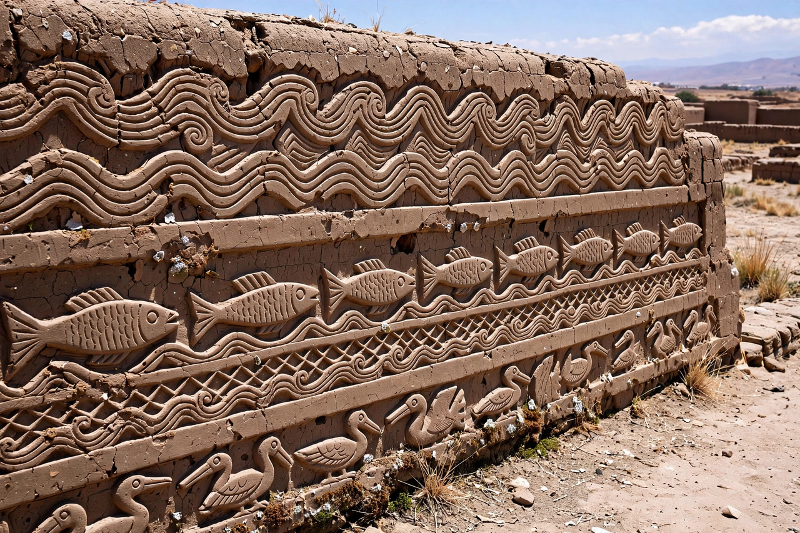

| Chan Chan | |
|---|---|
| Location | Near Trujillo, La Libertad Region, Peru |
| Culture | Chimú |
| Built | c. 850 – 1470 AD |
| UNESCO | World Heritage Site (1986); also on Danger list |

Chan Chan was the capital of the Chimú Empire (Chimor) and the largest pre-Columbian city in South America, as well as the largest adobe city in the world. Located in the Moche Valley near modern Trujillo on Peru's north coast, it covered about 20 square kilometres at its height, with a monumental core of nine great walled compounds (ciudadelas) and an urban population estimated between 40,000 and 60,000.
Each ciudadela — enclosed by adobe walls up to 9–10 metres high — was built by a successive Chimú king: it contained a palace, U-shaped audience rooms (audiencias), storerooms, reservoirs (walk-in wells), and a burial platform where the king was interred with sacrificed retainers and goods. Under the Chimú system of split inheritance, a new king inherited the throne but not his predecessor's wealth or palace, so each built his own compound and needed fresh conquests to fund it — a pattern that drove Chimú expansion along some 1,000 km of coast. The walls are decorated with adobe friezes of fish, waves, seabirds, otters and fishing nets, celebrating the sea that fed the city.
The Inca conquered Chan Chan around 1470 after a long siege, reportedly by cutting its water supply, and deported its skilled metalworkers to Cusco. The city was looted in Spanish colonial times for the gold in its royal tombs. UNESCO listed it as a World Heritage Site in 1986 and simultaneously placed it on the List of World Heritage in Danger, since its mud-brick fabric is highly vulnerable to the heavy rains of El Niño events and rising groundwater.
See also: Wari culture · Monks Mound